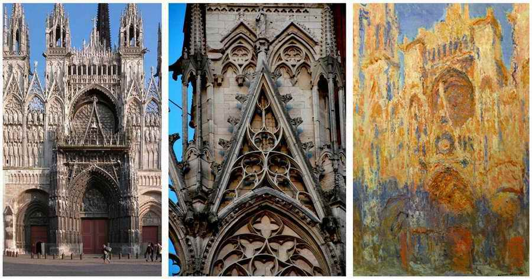
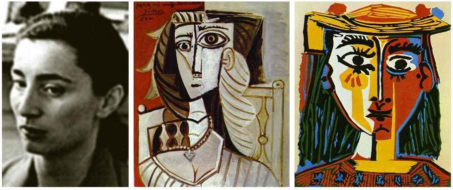
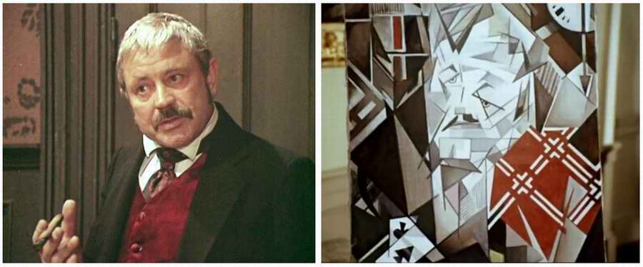

Different Understandings
Usually, when I present art midrashim, I begin with a remark: "Everything I am going to say is not the truth, but an attempt to reflect on the truth in the hope of coming closer to it."
This is how I understand it: the TRUTH, as it is, is contained in the BIBLE in Hebrew
Everything else is our understandings, interpretations, versions and so on. We know that even our reading aloud is already an interpretation: with our intonation we can put in "our own" punctuation, all the more since the original Hebrew text has neither capital letters nor punctuation, which can change the meaning; the lowering and raising of our voice, and so on.
All the more, reflecting on the text and expressing our thoughts is an interpretation of the text that does not claim to be the truth. It is our personal, subjective understanding. So it is very important to add here: "THIS IS HOW I UNDERSTAND IT. It is only my personal understanding."
At best our understanding comes somewhat close to the truth, but it is not the truth itself. That is at best!! In some ways our perception of the sacred texts is like flickering light and the art of the Impressionists.

Our understanding may open a little door to reflection on some small part of the truth. For the truth is far greater than the understanding of any particular person, community, denomination and so on.
This is true by definition. If we supposed that God has a brain, it would in any case be bigger than ours. His thoughts simply do not fit into our minds.
"For My thoughts are not your thoughts, neither are your ways My ways, saith the LORD. For as the heavens are higher than the earth, so are My ways higher than your ways, and My thoughts than your thoughts" (Isa. 55:8–9).
"For now we see through a glass, DARKLY… now I know in part; but then shall I know even as also I am known" (1 Cor. 13:12).
We cannot claim to possess the whole fullness of the truth, but only separate pieces of the puzzle, and even those DARKLY (1 Cor. 13:12).

We can endlessly come closer to the truth. And I think it is very important that we share with each other our revelations and our understanding of the text. This is the responsibility of each of us, including artists, since each of us has a unique set of tools for exploring and seeking the truth: opportunities, abilities, talents. So the revelation an artist receives through his creative work is unique. The way a musician, for example, reads the Bible, a lawyer will never be able to read it. A cook, in his turn, will read its great texts differently from a poet, a businessman or an agronomist.
If we share our small part of the revelation of truth with another, and that other shares with us, the range of our perception and understanding will widen. That is, the more different understandings we have, the more opportunity we will have to come closer to knowing the truth, and the closer we will come to it.

We often read a text of Scripture and understand it differently. And each insists on his own reading. We canonise part of our understanding and try to set it in rigid formulas that allow no ambiguity.
The average believer does not like "different" understandings. They stop him from living "in peace". "Just tell me what's right and don't confuse me!"
When a person knows that his understanding, his point of view, is the only right one, it means that everything else, all other views, are wrong and are not the truth.
By canonising a particular understanding, even if it really was right for its time and circumstances, we limit ourselves. One of the great said: "A part of the truth that passes itself off as the whole truth is a lie." That is, a limited truth turns into a lie.
When we read a text of the Bible and have our own version of understanding it, yet allow that other versions exist, even if we don't like them and disagree with them; when we accept that there may be several opinions besides our own, it means that we are NOT THE OWNERS OF THE FINAL TRUTH. Indeed, all truth belongs to God alone. And if we seek to know the truth and come closer to it, this depends on our relationship with the Creator and our relationship with our neighbour: how we receive him and his opinion.
I want to end this post with the words of the philologist Sergey Averintsev, who ended each of his lectures with the words: "…OR PERHAPS IT IS ALL QUITE THE OTHER WAY ROUND."
Author: Ephraim Kalish / Torah-Art